Für den Kabarettisten Gerhard Dicht habe ich im Jahr 2016 einen seiner Texte illustrieren dürfen. Das Ergebnis war ein buntes Pixiebuch, das den Titel "Die Winterliche Abteilung" trägt und begleitend zu seinem Programm auf den Veranstaltungen zum Verkauf steht.
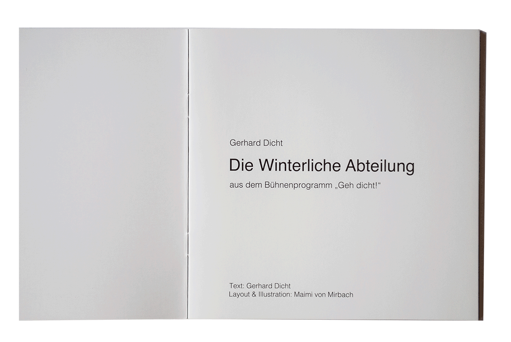 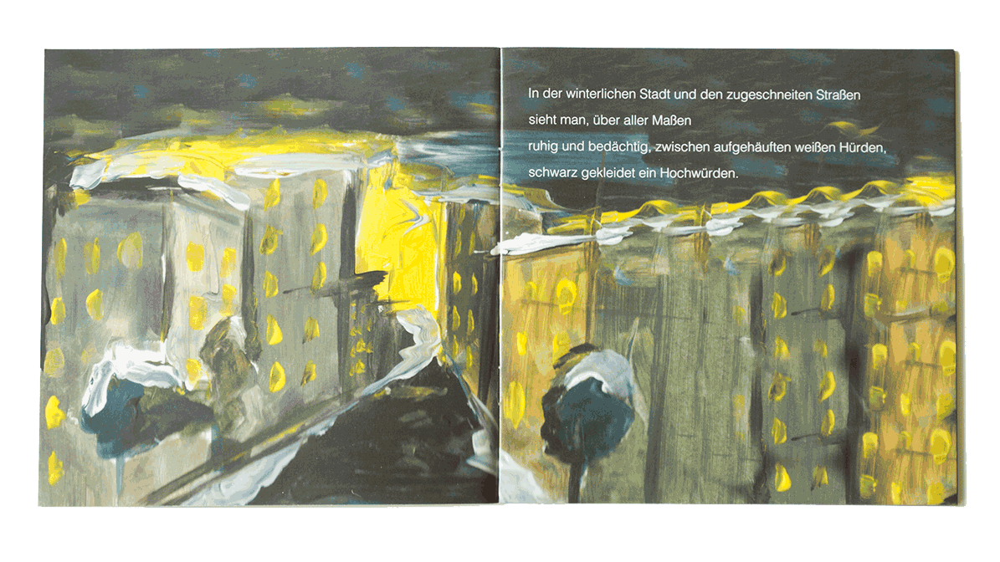 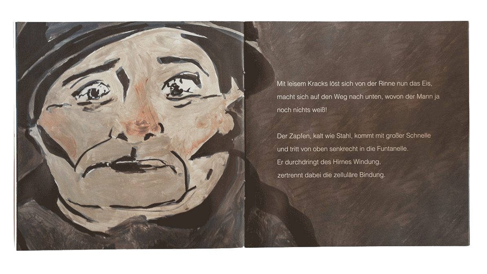
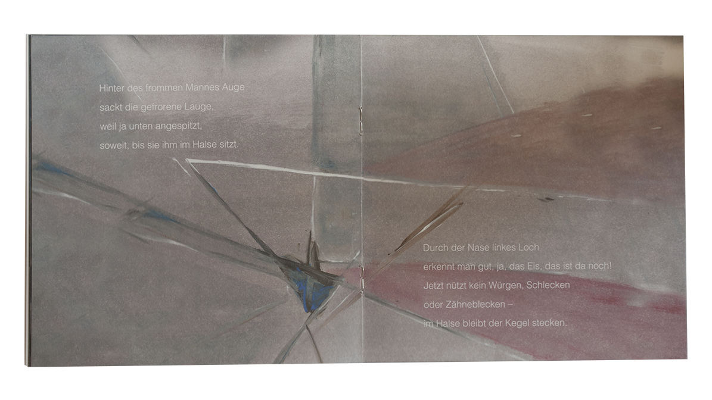
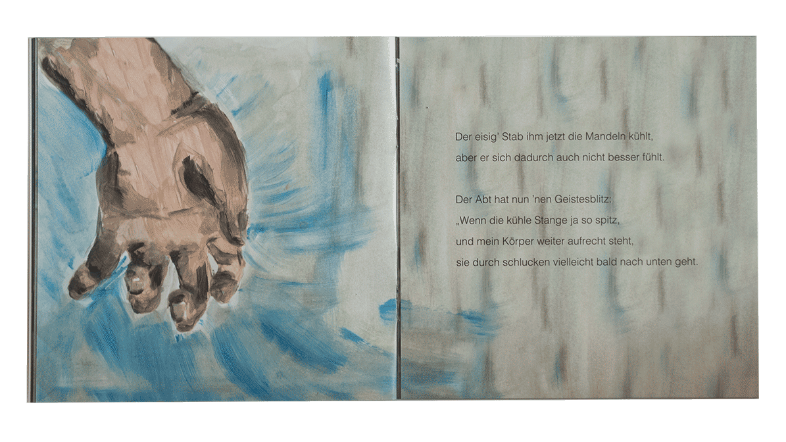
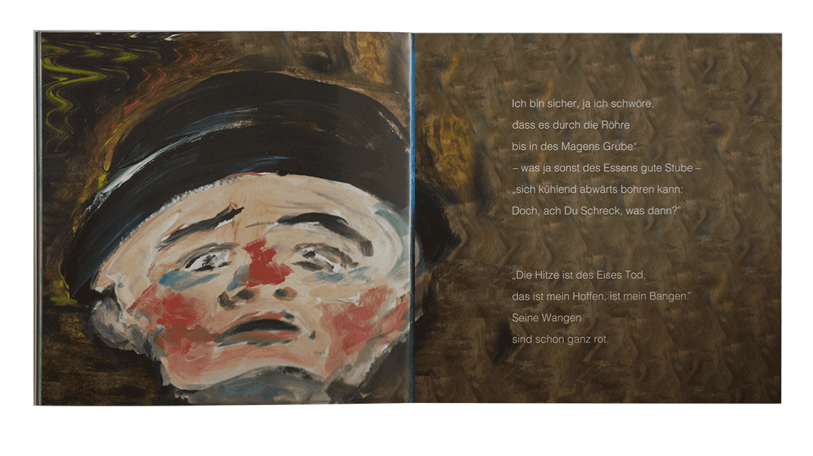
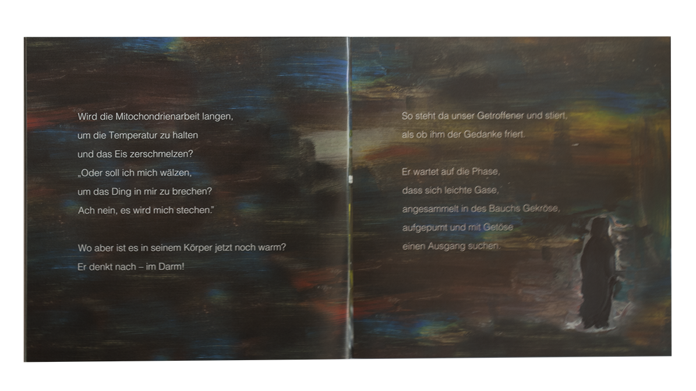
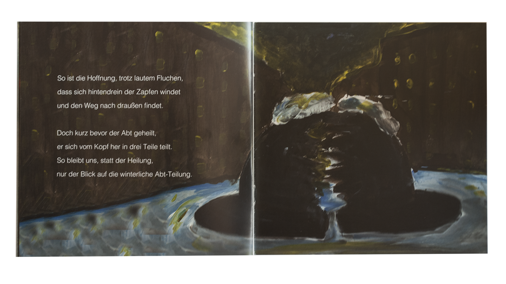
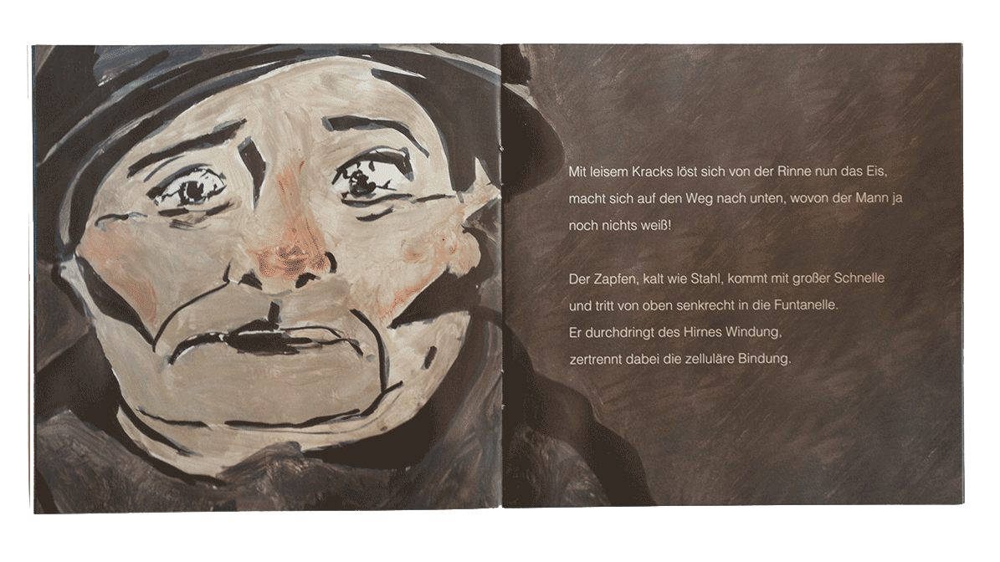
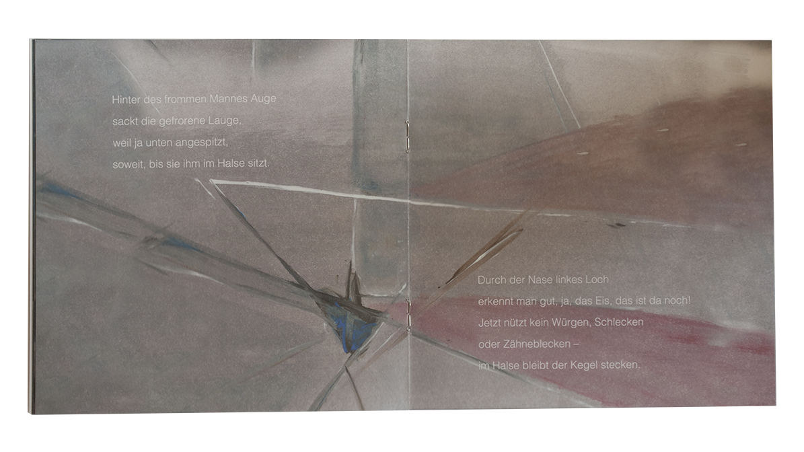
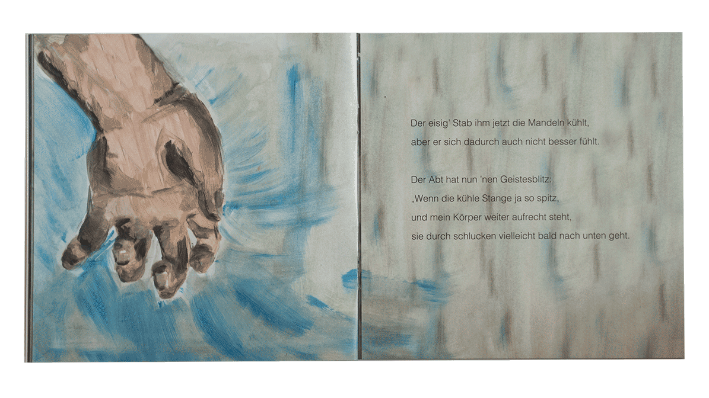
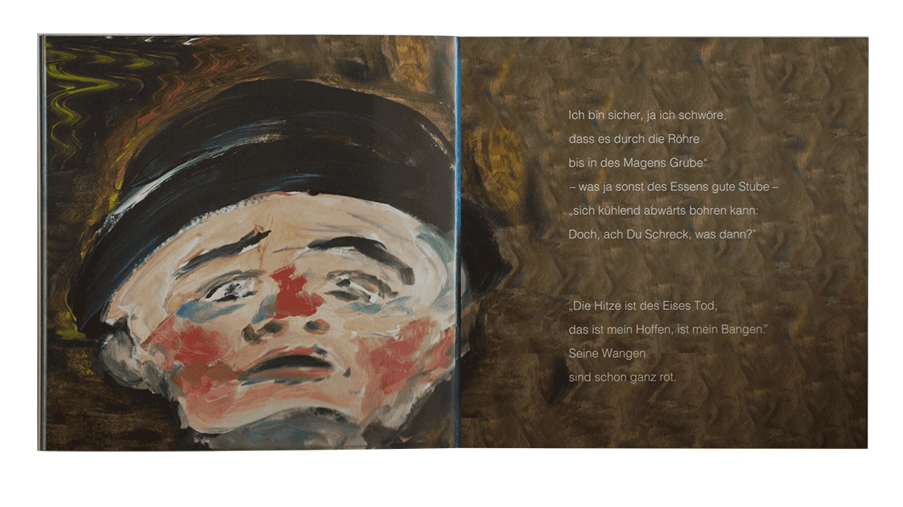
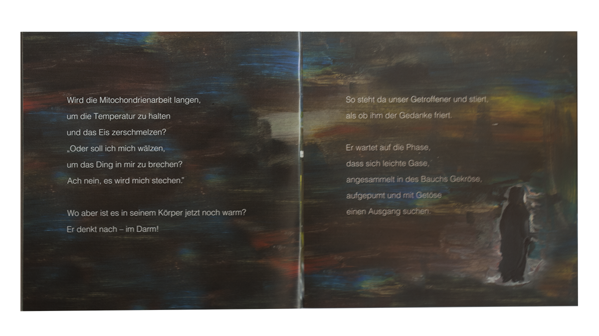
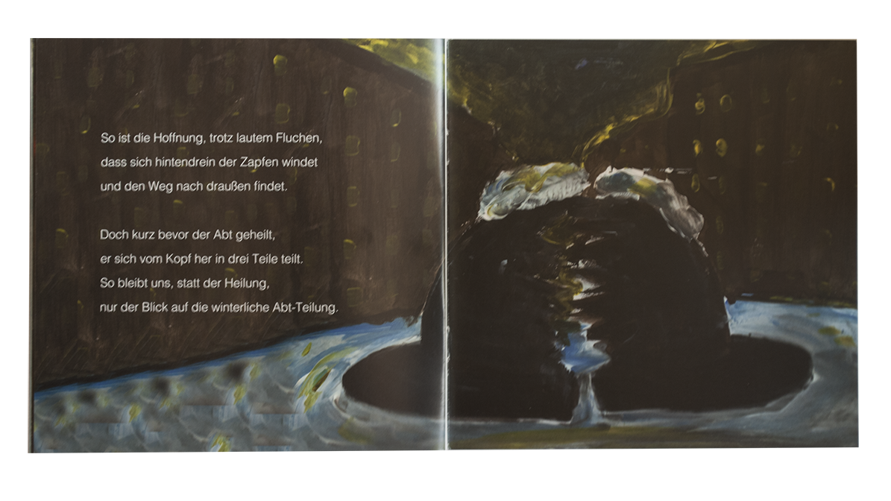